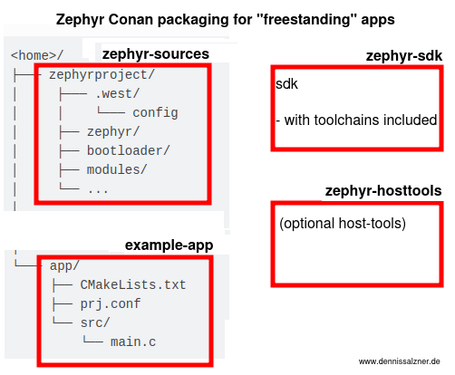

What
In the last part we’ve seen how we can compile flash images for ESP32-CAM modules with Zephyr.
For this we set up the SDK with toolchain, optional host-tools and checked out the zephyr-sources git repos to then run “west update” and checkout additional 64 git repos configured the west.ymlmanifest.
To develop more efficiently in future we can introduce Conan as a package manager to create packages that can be cached. We can then build our future user applications by running conan install . and conan build . in the source code directory.
Contents
When
I’ve used Conan at previous and current employers for large-scale deployments. It has a learning curve, but, when done right, significantly improves development.
Why
In small-scale, even hobbyist projects that you only work on from time to time, it’s still convenient to be able to resort to cached packages and only issue the same two commands and immediatly have a workspace configured.
Background
Conan is a recipe-based package manager. Similar to a cooking recipe you add your build-requirements, instructions on how to build and what to package after the build. It distinguishes packages by hash that are generated from requirements list, settings and options. It comes with common predefined settings such as os, build_type release/debug. It’s generally highly configurable. Custom options can be added.
As mentioned above it really pays off in large scale deployments with a central artefact storage, but it’s still useful when using it only locally without a remote server as it keeps your projects organized and reproducable.
How
Zephyr Directory Structure “Free-Standing Application” vs. “Repo Application”
First let’s look at the directory structure of the Zephyr workspace we created in the last part of the series.
“Repo Application”
The Zephyr “Getting Started” guide we followed in Part 1 got us to the following directory structure:
There is a samples (or applications) folder inside the zephyr workspace alongside all other files.
This includes the zephyr repo from zephyrproject-rtos/zephyr and 65 additional repos pulled in by west following the west.yml configuration in that repo.
Additionally we have the SDK located under /opt/zephyr-sdk
“Free-Standing Application”
What we really want is the “free-standing” mode [1].
Here the application can be moved to any other folder giving us more autonomy.
Looking at zephyr/zephyr-env.sh in our workspace from last time we find the environment vairable ZEPHYR_BASE. Following the documentation we can set that variable to a different location to enable building applications in other directories (out-of-tree).
Manual Out-of-Tree build
First let’s remove all environment variables we’ve set to avoid confusion
rm -rf $HOME/.cmake/packages/Zephyr-sdk
mv /opt/zephyr-sdk/0.9 $HOME/somewhere-zephyr-sdk
mv %HOME/zehpyr $HOME/somewhere-zephyr-workspace
Then move the contents of zephyr/samples/basic/blinky to a new location. We can see that we can still build, if we set the variables appropriately. We will have to imitate this behaviour with our conan recipes.
export ZEPHYR_SDK_INSTALL_DIR=$HOME/somewhere-zephyr-sdk
export ZEPHYR_BASE=$HOME/somewhere-zephyr-workspace
west build -p always -b esp32_devkitc_wroom src/
Remarks on packaging Zephyr in general
Starting off I’ve learned some things about Zephyr the hard way that I’d like to share.
Regarding the Toolchain
For various hard-coded reasons, that the toolchains such as toolchain_linux-x86_64_xtensa-espressif_esp32_zephyr-elf.tar.xz appear to have to be inside the SDK directory.
There are environment variables like TOOLCHAIN_ROOT, ZEPHYR_TOOLCHAIN_VARIANT, HOST_TOOLS_HOME, but these have side-effects.
Also since there is only one TOOLCHAIN_ROOT you’d run into trouble when you have multiple toolchains (x86_64 for Qemu for locally debugging alongside ESP32 for instance) without dynamically switching that variable.
Starting off I’ll just package the toolchain with the SDK.
Regarding the Host-Tools
The Host-Tools seem to be optional for building, but are required for debugging and advanced usage.
They contain binaries that only need to be added to the PATH environment variable. This is optional, but packing them is a bit involved. I’ll also add a conan recipe for that below.
Regarding the “west” metatool
The west-tool is essentially a simple Python tool to download the west.yml into proper locations. It uses CMake underneath and so, after prior setup with west, we can fallback to CMake for more advanced configuration.
Regarding the tool itself it could be packaged with Conan to keep everything self-contained or for bleeding-edge or modified versions of the tool, but apart from that it is already available as a pip package and since we’re usually installing Conan also via pip, there’s not much advantage of repackaging the tool.
ESP32 PinCtrl Headers
Below I’ll be switching to a known Git commit by Conan’s Git-SCM-Module rather than the west tool, as it doesn’t appear to support cloning a specific Git-Commit, but only tags or branches.
For the ESP32 I’ve found that the current most recent v3.5 of Zephyr is missing the ESP32 pinctrl-Headers, but they are contained in the current main.
This is probably a temporary issue that will go way with v3.6 and only relevent when using the ESP32. Normally it’s very much advised to package the latest stable version of software.
Packaging with Conan
With the above in mind and the “freestanding” build of an application working, we can create the recipes.
We aim for the following structure:

Example Application
Starting off with our application, the “blinky” sample, we move the code from zephyr/samples/basic/blinky to a new directory and add a conanfile.py.
Inside the CMakeLists.txt you’ll find relies on an environment variable ZEYPHR_BASE. We will need to set that environment variable and the ZEPHYR_SDK_INSTALL_DIR for the SDK.
cmake_minimum_required(VERSION 3.20.0)
find_package(Zephyr REQUIRED HINTS $ENV{ZEPHYR_BASE})
project(blinky)
target_sources(app PRIVATE src/main.c)
In the conanfile.py all we need is to require the sources and SDK. In the following sections you’ll see the recipes for both.
import os
from pathlib import Path
from conan import ConanFile
from conan.tools.files import chdir, copy
class ZephyrExample(ConanFile):
name = "zephyr-example"
version = "0.0.1"
exports = "*"
def requirements(self):
self.requires("zephyr-sources/85b503e")
self.requires("zephyr-sdk/0.16.5-1")
def build(self):
copy(self, pattern="*", src=self.recipe_folder, dst=Path(self.build_folder) / "src")
os.environ['ZEPHYR_SDK_INSTALL_DIR'] = self.dependencies["zephyr-sdk"].package_folder
os.environ['ZEPHYR_BASE'] = str(Path(self.dependencies["zephyr-sources"].package_folder) / "zephyr")
self.run(f"west build -p always -b esp32_devkitc_wroom src/")
def package(self) -> None:
copy(self, pattern="build/zephyr/zephyr.elf", src=self.build_folder, dst=self.package_folder, keep_path=False)
def package_info(self) -> None:
pass
Note:
- the
os.environis better handled byself.env_info.ZEPHYR_SDK_INSTALL_DIRin the sdk/source recipes, but there has been a change in behaviour between conan 1.x and 2.x and for the sake of simplicity and demonstration the above works across both versions more reliably
Zephyr-SDK
Here we remove the included hosttools as we will package them seperately.
Unfortunately, as mentioned above, I haven’t found a way to handle (multiple) toolchains without packaging them together with the SDK. For most use-cases the following is sufficient.
import glob
import os
from pathlib import Path
import shutil
from conan import ConanFile
from conan.tools.files import chdir, copy, get
class ZephyrSdkConan(ConanFile):
name = "zephyr-sdk"
version = "0.16.5-1"
url = "https://github.com/zephyrproject-rtos/sdk-ng/releases/download/v0.16.5-1/zephyr-sdk-0.16.5-1_linux-x86_64_minimal.tar.xz"
sha256 = "f23836a1d35800ae7d98073f8f7c79166deeed753b5af927ef778764592d9675"
exports = "*"
def build(self) -> None:
get(self, url=self.url, sha256=self.sha256)
# -- remove hosttools archive
zephyrHostToolsSh = glob.glob("**/zephyr-sdk-*-hosttools-standalone-*.sh")[0]
os.remove(zephyrHostToolsSh)
# -- remove setup script
setupSh = glob.glob("**/setup.sh")[0]
os.remove(setupSh)
# -- add toolchain
zephyr_sdk_directory = glob.glob("zephyr-sdk-*")[0]
toolchain_url = "https://github.com/zephyrproject-rtos/sdk-ng/releases/download/v0.16.5-1/toolchain_linux-x86_64_xtensa-espressif_esp32_zephyr-elf.tar.xz"
toolchain_sha256 = "c28062aef858681ce06899a1ff393170deed4554de94a9ed21b8719a7656d14e"
get(self, url=toolchain_url, sha256=toolchain_sha256, destination=zephyr_sdk_directory)
def package(self) -> None:
zephyr_sdk_directory = glob.glob("zephyr-sdk-*")[0]
copy(self, pattern="*", src=Path(self.build_folder) / zephyr_sdk_directory, dst=self.package_folder)
def package_info(self) -> None:
self.env_info.ZEPHYR_SDK_INSTALL_DIR = self.package_folder
Zephyr-Sources
The Zephyr west metatool clones a large number of GitHub repos depending on its the west.yml configuration.
The best way to deal with this seems to overwrite the west.yml with a custom filtered one, then run west init once , switch to a known Git commit and run west update. As mentioned above it’s better to checkout a specific release of Zephyr via west instead of switching to a Git-Hash from main, but for ESP32 support I currently need the main.
That way you can use the resulting package in future without having to checkout everything again, you can easily update at a later time and control what gets cloned and from where - in case we need to mirror the repos from the west.yml to our own infrastructure.
from pathlib import Path
import shutil
from conan import ConanFile
from conan.tools.files import chdir,copy
from conan.tools.scm import Git
class ZephyrSourcesConan(ConanFile):
name = "zephyr-sources"
url = "https://github.com/zephyrproject-rtos/zephyr.git"
commit = "85b503e23b17aef4e4a6d172ec99eac17a1db25e"
version = commit[:7]
exports = "*.yml"
def build(self) -> None:
# -- run west init with a specific version
self.run(f"west init -m {self.url} --mr main .") # pip install west
# -- switch to fixed commit
git = Git(self)
with chdir(self, "zephyr"):
git.checkout(commit = self.commit)
# -- overwrite west.yml
west_manifest_src = Path(self.recipe_folder) / "west.yml"
west_manifest_dst = Path(self.build_folder) / "zephyr" / "west.yml"
shutil.copy(west_manifest_src, west_manifest_dst)
# -- run west update to download repos configured in west.yml
self.run("west update")
def package(self) -> None:
copy(self, pattern="*", src=self.build_folder, dst=self.package_folder)
def package_info(self) -> None:
self.env_info.ZEPHYR_BASE = str(Path(self.package_folder) / "zephyr")
(Optional) Hosttools
For the optional hosttools I’ve chosen to package them seperately.
The only challenge here is to extract a Yocto-style self-extracting shell script. The shell script contains a “MARKER” line after which the binary of a 7zip-Archive follows.
As the conan recipes are written in Python we can just imitate that behaviour. It seems we can’t use Conan’s unzip function as the 7z is not compatible, so I’m using patoolib.
After extracting the 7zip archive from the Shell-Script, extracting it which automatically extracts the *.tar inside of that (at least on Linux - seems to behave differently on Windows), we just package the files and set all **/bin-folders in the PATH-variable.
import glob
import os
from pathlib import Path
import patoolib
import shutil
from conan import ConanFile
from conan.tools.files import copy, get
class ZephyrHosttools(ConanFile):
name = "zephyr-hosttools"
version = "0.16.5"
url = "https://github.com/zephyrproject-rtos/sdk-ng/releases/download/v0.16.5/hosttools_linux-x86_64.tar.xz"
sha256 = "b9a1effc8c0bb089ac3b06e0981a04365cb3328042d766ec2715b4d7bdd4b9d0"
exports = "*"
def build(self) -> None:
get(self, url=self.url, sha256=self.sha256)
# -- extract hosttools 7z from sh-Archive
archiveSh = glob.glob("zephyr-sdk-*-hosttools-standalone-*.sh")[0]
with open(archiveSh, 'rb') as f:
blob = f.read()
marker = b'MARKER:\n'
markerPosition = blob.find(marker) + len(marker)
blob = blob[markerPosition:]
archive7z = archiveSh.replace(".sh", ".7z")
with open(archive7z, "wb") as f:
f.write(blob)
# -- extract 7z and tar inside
self.run(f"patool extract {archive7z}")
archiveTar = archive7z.replace('.7z', '.tar')
# -- remove parent directory
for element in os.listdir(archiveTar[:-4]):
shutil.move(Path(archiveTar[:-4]) / element, self.build_folder)
# -- remove excluded files
os.remove(archiveSh)
os.remove(archive7z)
def package(self) -> None:
copy(self, pattern="*", src=self.build_folder, dst=self.package_folder)
def package_info(self) -> None:
bin_folders = glob.glob("**/bin", recursive=True)
for bin_folder in bin_folders:
self.env_info.path.append(str(Path(self.package_folder) / bin_folder))
Building
With that we can already build by running conan create on all of our recipes one by one.
conan create conan-zephyr-sdk/
conan create conan-zephyr-sources/
conan create example/
The first two calls download and checkout repos from the internet and take the most time, but we’ll only have to run that once.
If you’re collaborating in a team and have an artefact storage you can upload the packages and your colleagues can quickly get setup in a clean and reproducable way, even without access to the global internet - often a requirement in corporations for safety reasons.
The last call will compile the project, produce the *.elf file and place it in the package directory.
on my system it’s in
$HOME/.conan2/p/b/zephyfc68e6f85973b/p
As Conan will tell you
conan list zephyr-example/0.0.1:* # returns package_hash
conan cache path zephyr-example/0.0.1:<package_hash> # returns package path containing *.elf binary
Development, Testing and Flashing
In practice, when working on the application, you’d conan install and conan build in your workspace.
In an automated CI/CD you might run conan tests on the packages and promote them through a staging system.
For flashing you’d probably have a script that either runs conan install in temporary directory and then runs west flash or uses conan download to download the package, grab the *.elf from the package folder and flash it.
Progress
Conclusion
We now have a quick, cached, efficient and reproducable way to build Zephyr applications with fine-granular control over what dependencies get dragged in.
Deployments get much cleaner and also locally runable when your Shell scripts, Jenkins scripts, GitHub Workflows, Dockerfiles can all consistently pip install conan, conan config install <config> and then only git clone and conan create each package.
1] https://docs.zephyrproject.org/latest/develop/application/index.html#zephyr-freestanding-application